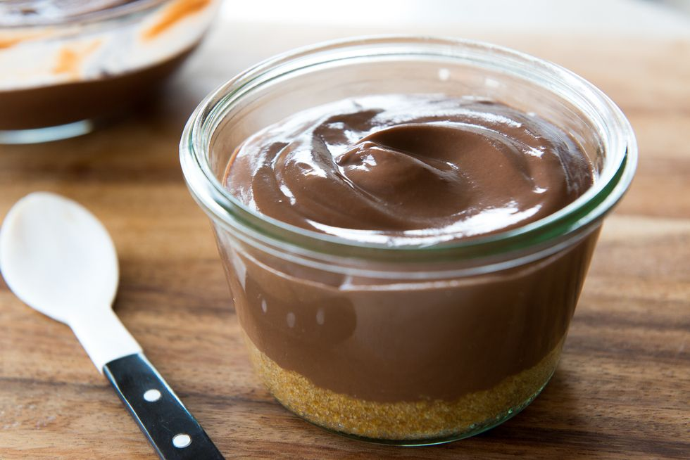

Chocolate Pudding

Description
Although store-bought chocolate puddings are actually pretty decent in terms of flavor and quality, I absolutely love to make my own chocolate pudding at home. It’s one of the easiest and quickest desserts you can make, and it's heavenly eaten on its own or as a component in other desserts.
Ingredients
- 2 Large Egg Yolks
- 2 tbsp. Cornstarch
- 2 c. Whole Milk, Divided
- 1/2 c. Sugar
- 1/4 c. Unsweetened Cocoa Powder
- 1/4 tsp. Salt
- 2 tsp. Chocolate Extract (or Vanilla Extract)
Steps
- In a medium bowl, whisk the egg yolks for about 60 seconds until light yellow and increased in volume, then whisk in the cornstarch and about 1/4 cup of the milk. Once smooth and incorporated, set aside.
- Place the sugar, cocoa, salt, and remaining milk in a saucepan, and bring to a scald over medium-high heat, which is when the liquid is about 180-190ºF. This is before the mixture comes to a boil, and in this stage you will see little bubbles start forming on the sides of the pan. Remove the pan from the heat and, while whisking constantly, dribble the hot cocoa into the egg cornstarch mixture very gradually. We are tempering so we don't scramble the eggs. Pour everything back into the saucepan and cook over medium high heat, whisking constantly, until the pudding comes to a full boil. Reduce the heat to a simmer and continue whisking for a couple minutes until the pudding is thickened.
- Remove the pudding from the heat and stir in the chocolate or vanilla extract. Pour the pudding into a bowl and press plastic wrap directly on the surface of the pudding so a skin doesn't form. Refrigerate for an hour or two until chilled. Serve and enjoy!